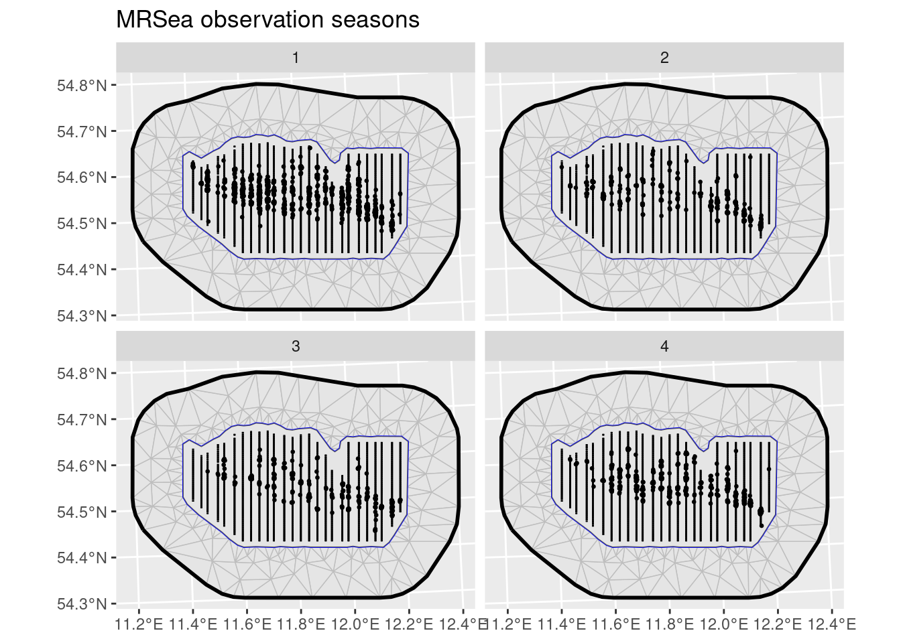
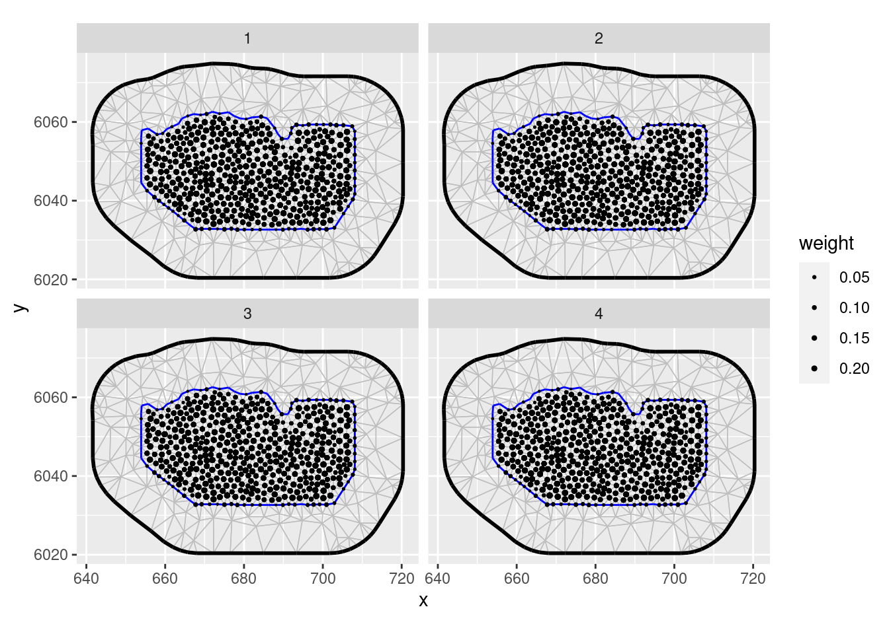
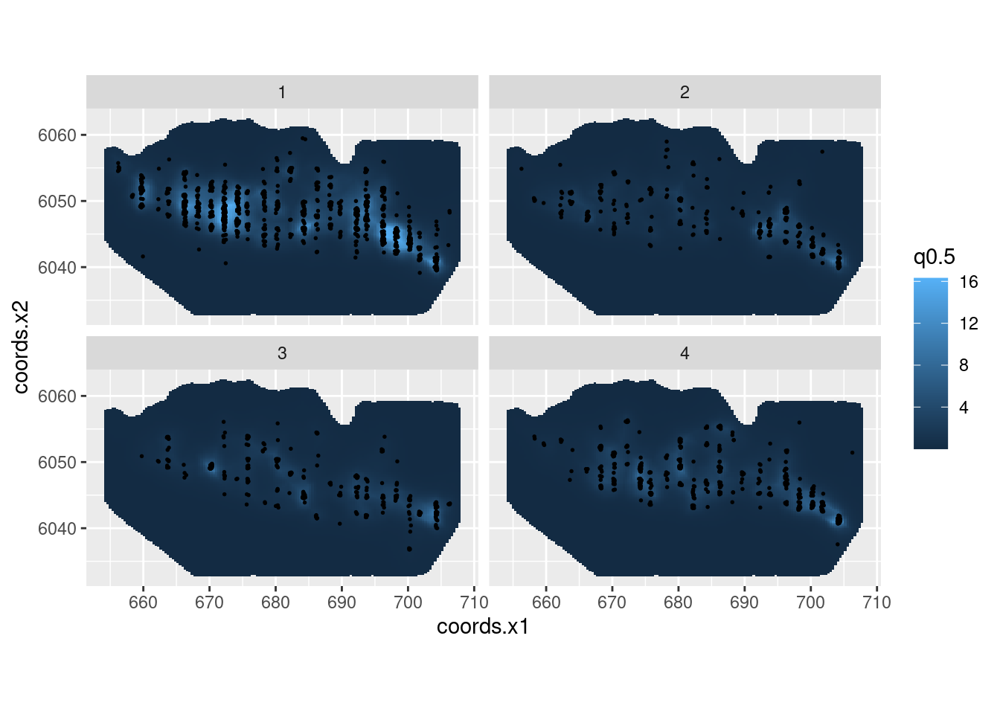

LGCPs - An example in space and time
Fabian E. Bachl and Finn Lindgren
Generated on 2024-10-15
Source:vignettes/articles/2d_lgcp_spatiotemporal.Rmd
2d_lgcp_spatiotemporal.RmdIntroduction
For this vignette we are going to be working with a dataset obtained
from the R package MRSea. We will set up a
LGCP with a spatio-temporal SPDE model to estimate species
distribution.
Get the data
Load the dataset, that has coordinates in UTM in kilometres:
mrsea <- inlabru::mrseaThe points (representing animals) and the sampling regions of this dataset are associated with a season. Let’s have a look at the observed points and sampling regions for all seasons:
ggplot() +
geom_fm(data = mrsea$mesh) +
gg(mrsea$boundary) +
gg(mrsea$samplers) +
gg(mrsea$points, size = 0.5) +
facet_wrap(~season) +
ggtitle("MRSea observation seasons")
Integration points
The inlabru point process model knows how to construct
the numerical integration scheme for the LGCP likelihood. We can also
call the internal functions directly to see what the integration scheme
will look like. Because our model will take time (season) into account
we have to construct the integration points for the LGCP accordingly.
Using the fm_int() we can specify the product domain space.
Note that omitting this step would simply aggregate all sampling regions
over time.
Plot the integration points:
ggplot() +
geom_fm(data = mrsea$mesh) +
gg(ips, aes(size = weight)) +
scale_size_area(max_size = 1) +
facet_wrap(~season)
Fitting the model
Fit an LGCP model to the locations of the animals. In this example we
will employ a spatio-temporal SPDE. Note how the group and
ngroup parameters are employed to let the SPDE model know
about the name of the time dimension (season) and the total number of
distinct points in time.
matern <- inla.spde2.pcmatern(mrsea$mesh,
prior.sigma = c(0.1, 0.01),
prior.range = c(10, 0.01)
)
cmp <- geometry + season ~ Intercept(1) +
mySmooth(
geometry,
model = matern,
group = season,
ngroup = 4
)
fit <- lgcp(cmp,
data = mrsea$points,
samplers = mrsea$samplers,
domain = list(
geometry = mrsea$mesh,
season = seq_len(4)
)
)Predict and plot the intensity for all seasons:
ppxl <- fm_pixels(mrsea$mesh, mask = mrsea$boundary, format = "sf")
ppxl_all <- fm_cprod(ppxl, data.frame(season = seq_len(4)))
lambda1 <- predict(
fit,
ppxl_all,
~ data.frame(season = season, lambda = exp(mySmooth + Intercept))
)
pl1 <- ggplot() +
gg(lambda1, geom = "tile", aes(fill = q0.5)) +
gg(mrsea$points, size = 0.3) +
facet_wrap(~season) +
coord_sf()
pl1